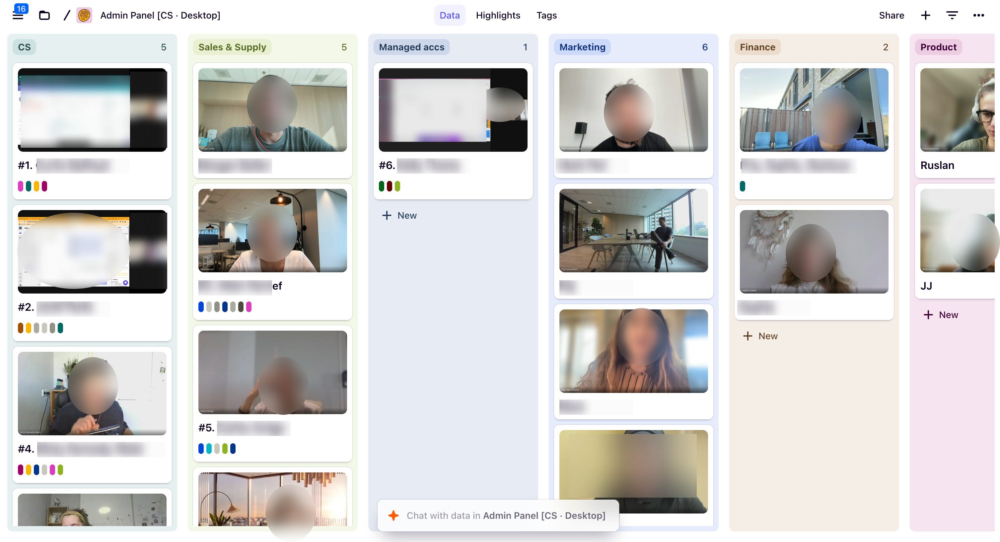

Interviewing and shadowing the finance team
I started by observing the process rather than assuming which parts could be automated.
I shadowed the finance team as they prepared payouts and asked them to explain what they checked, where they found the information and what could prevent a payout from being released.
This revealed that the work was more than transferring money. It was a risk-assessment process built from many small signals across different systems.
